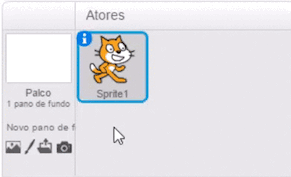
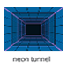
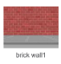

Escolher um pano de fundo
Escolha um pano de fundo para o seu jogo no estilo pong.
Clique no ícone  para abrir a biblioteca de panos de fundo:
para abrir a biblioteca de panos de fundo:

Então, escolha o pano de fundo que você quer (como túnel de neon, ou parede de tijolos):
 
Depois, escolha uma bola